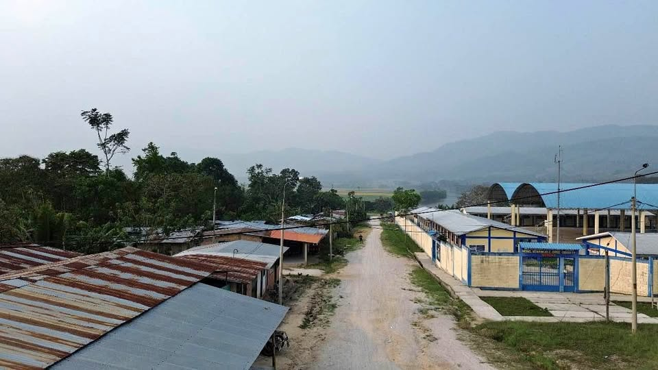

PEN2,500 50 ha

🌴 ¡Increíble oportunidad en Marona, Moyobamba, San Martín! 🌾🐾 Fundo de más de 50 hectáreas con gran potencial agrícola, ganadero y turístico: ✅ 2.5 hectáreas de café en producción al 100%. ✅ 3 hectáreas de inverna ideales para ganaderia y demás. ✅ 6 hectáreas de purma perfectas para desarrollo agrícola o forestal a orillas del río Mayo. ✅ 37.5 hectáreas de terreno con 20 hectáreas de purma y 17 hectáreas de montaña con acceso para movilidad, excelente para conservación o proyectos eco-turísticos. ✅ 2 hectáreas en el puerto principal, estratégicas para inversiones y turismo. 📍 Ubicado a ori